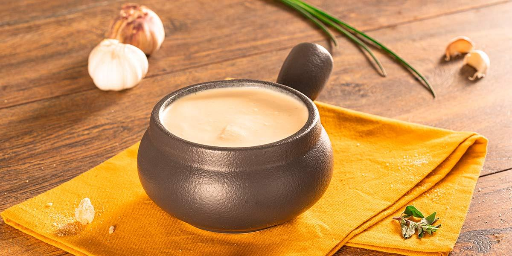

Crema de pollo con trozos de pan

Ingredientes
- 4 tazas de agua fría (1000 ml)
- 1 tallo de cebolla larga, finamente picado (15 g)
- 1 sobre de CALDO DE GALLINA MAGGI® DESMENUZADO (9 g)li>
- 1 pechuga de pollo, sin piel y sin hueso, cortada en trozo medianos (453 g)
- 1/2 taza de CREMA DE LECHE NESTLÉ® (120 g)
- 1 cucharada de aceite (14 g)
- 1 taza de pan cortado, en trozos pequeños (80 g)
Instrucciones
- En una olla a fuego medio, añade el agua, la cebolla, el sobre de CALDO DE GALLINA MAGGI® DESMENUZADO y la pechuga de pollo, cocina por 20 minutos o hasta que el pollo este bien cocinado.
- Retira del fuego y pon la mezcla en el vaso de la licuadora, añade la CREMA DE LECHE NESTLÉ®, licua por 30 segundos o hasta que integres bien, vierte la crema de pollo nuevamente en la olla y cocina por 3 minutos más.
- Aparte, en una sartén a fuego medio calienta el aceite por 3 minutos, añade los trozos de pan y cocina por 2 minutos o hasta que estén bien dorados y crocantes, sirve la crema de pollo y encima decora con los trozos de pan.
- También puedes usar en esta receta CALDO DE GALLINA MAGGI® DESMENUZADO 70% menos sodio.
- Servir